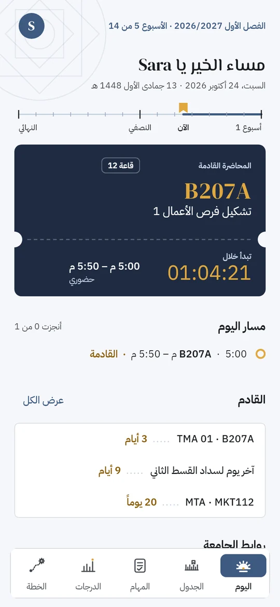
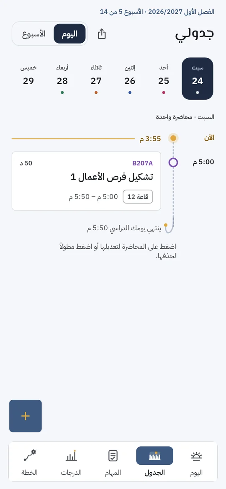
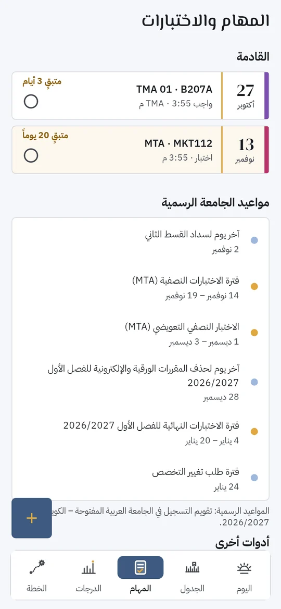
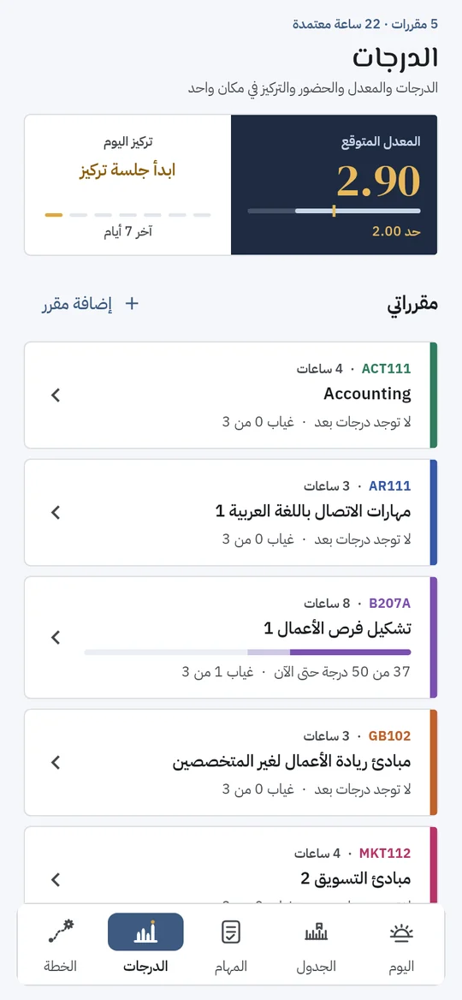
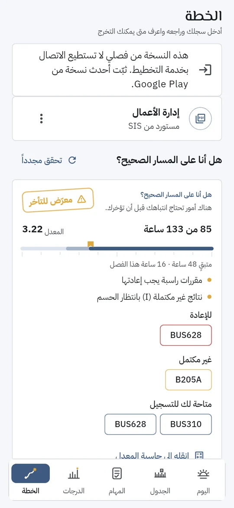
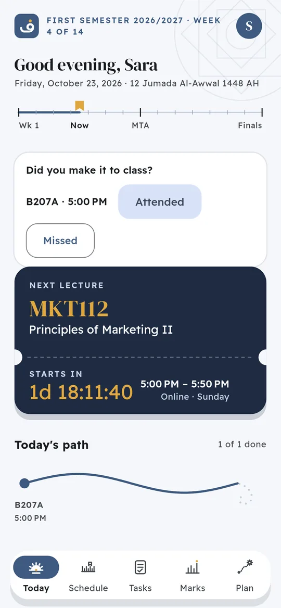
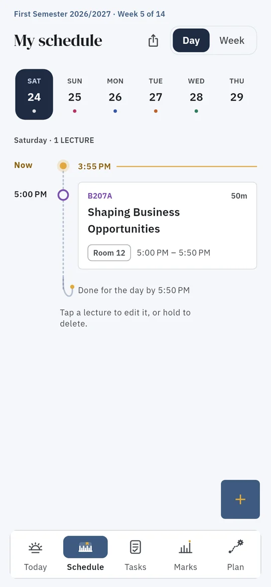
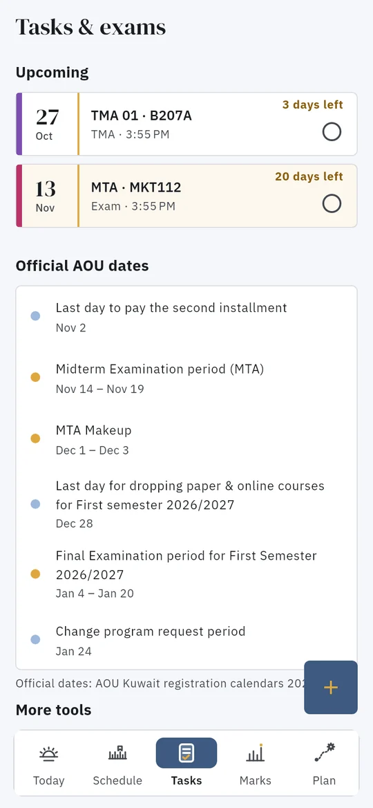
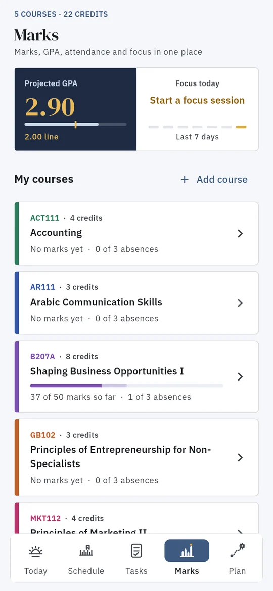
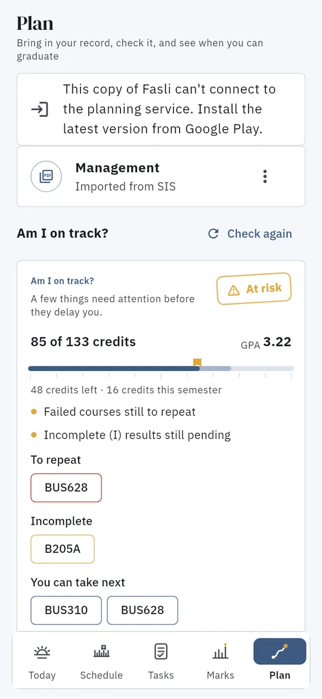

ارفع ملف سجلك من نظام الجامعة، وفصلي يرتّب لك المواد فصلاً بفصل حسب المتطلبات وحدود الساعات، لين التخرّج. ومعه يومك وجدولك ومهامك ودرجاتك في مكان واحد. مصمّم لطلاب الجامعة العربية المفتوحة في الكويت والسعودية والأردن وعُمان والبحرين ولبنان ومصر.
أندرويد · مجاني · عربي وإنجليزي · وضع داكن

اليوم والجدول والمهام والدرجات والخطة. والأدوات الإضافية مرتّبة داخلها، تطلع لك لما تحتاجها بس.




تقدر تبدأ بدون ملفات وتدخّل موادك بيدك، بس الملف أسرع وأدق.
كل الأدوات مجانية عند الإطلاق.
كل الفصول لين التخرّج، مع المتطلبات السابقة وحدود الساعات. ثلاث مسارات: الأسرع والمتوازن والأخف. احفظ لين ٣ خطط وقارن بينها، وشوفها حتى بدون إنترنت.
شاشة اليوم تبيّن المحاضرة القادمة وكم باقي عليها، وتسألك بعد المحاضرة: حضرت أو غبت؟ عشان يبقى عدّاد الغياب صحيح.
كل واجب واختبار مع كم يوم باقي، وعلّمه «تم» بلمسة لما تخلّص. ومعه مواعيد الجامعة الرسمية: الأقساط والسحب والاختبارات.
ارفع كشف الدرجات أو نموذج التسجيل أو صورة الجدول أو خطة المادة (السيلابس)، وفصلي يقرأها وتراجعها قبل الحفظ.
دخّل درجات الـTMA والـMTA وشوف الدرجة المطلوبة لكل تقدير، مع تنبيه إذا المادة في خطر قبل آخر يوم للسحب.
حاسبة معدل مع هدف، ووضعك من الإنذارات الأكاديمية وكيف ترجع فوق ٢.٠٠، ومرتبة التخرّج ومنح التفوق.
عدّ تنازلي، وقائمة باللي تحتاجه، وقاعدة التأخر عن الدخول. وإذا فاتك اختبار، يقولك شنو تسوي وآخر موعد للعذر، وكيف تتظلم على درجة.
اختار النهائيات اللي تبي لها خطة، وفصلي يقترح ساعات المذاكرة قبل كل اختبار. ما يجدول شي إلا إذا وافقت.
جلسات مذاكرة بمؤقت، وسجل أسبوعي لساعات تركيزك لكل مادة.
قبل المحاضرة ومواعيد التسليم والاختبارات، مع ساعات هدوء وجدول رمضان، وملخص أسبوعي صباح كل أحد.
فاتح أو داكن أو حسب الجوال، وأربعة ألوان. وتقدر تخفي أو ترتّب بطاقات شاشة اليوم.
تشتغل بدون حساب، وبياناتك على جوالك. احفظ نسخة احتياطية في ملف وحدة، وأرجعها متى ما تبي.
عربي وإنجليزي، على الجوال والتابلت. وأدوات ثانية: تقرير تقدّم PDF، مواد من جامعة ثانية، قبل لا تسحب مادة، والتقويم الأكاديمي.
نبحث عن طلاب يجرّبون فصلي قبل نشره على Google Play. التجربة مجانية وتطوعية.
Know when you'll graduate, and what to register every semester. Upload your record PDF from the university system and Fasli builds your route semester by semester, checking prerequisites and credit limits all the way to graduation. Your day, timetable, tasks and marks sit alongside it. Made for Arab Open University students in Kuwait, Saudi Arabia, Jordan, Oman, Bahrain, Lebanon and Egypt.





Every tool is free at launch, in English and Arabic, on phones and tablets. We never ask for your university password.
Join the test: we're looking for Android users with a Gmail address who can keep the app installed for 14 days. Email us to join (fasli.planner@gmail.com).